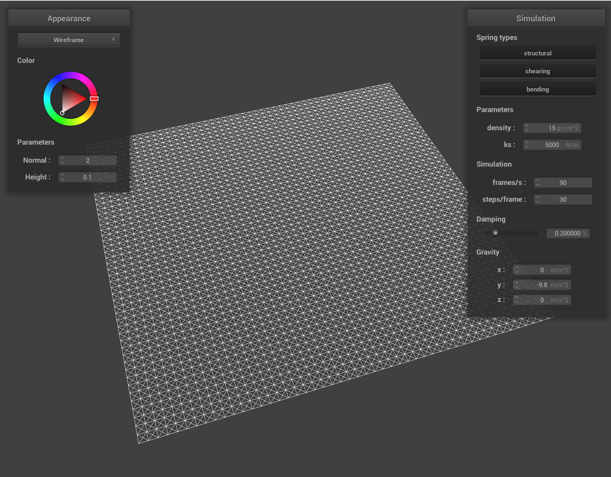
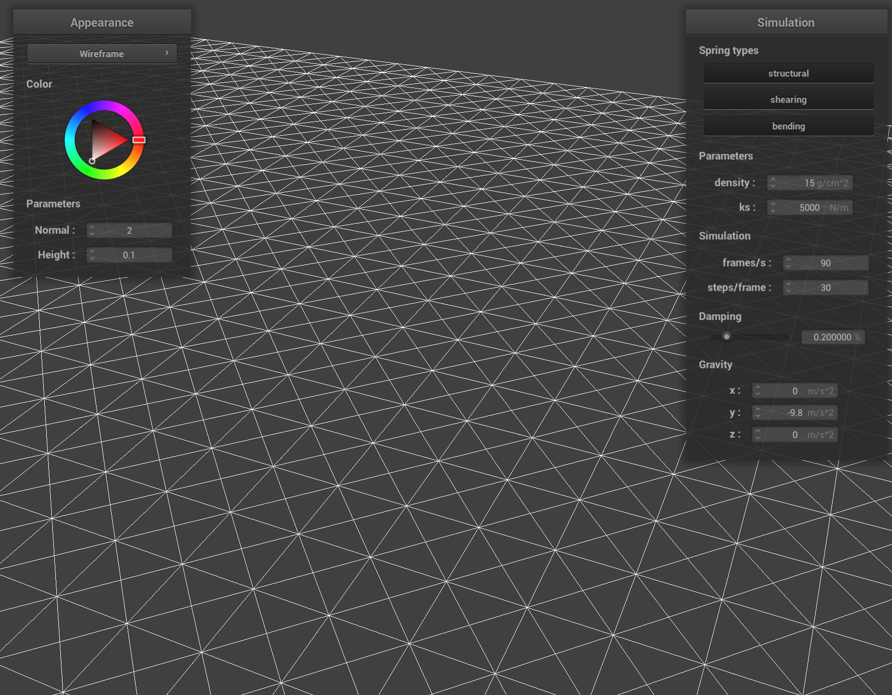
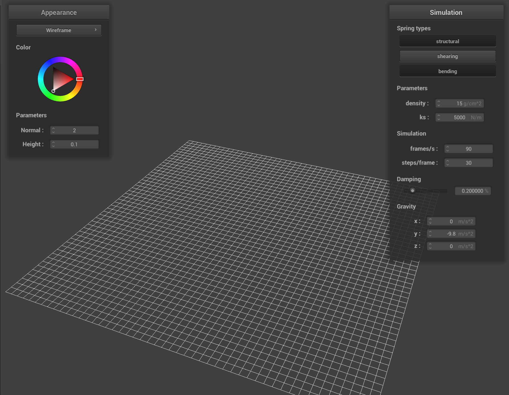

For Part 1, I implemented a system to generate a grid of point masses and spring contraints to form the basis for our cloth simulation.
You can see below the cloth generated by this code:
Here's a closer view. All constraints are turned on for this picture.
In this picture, I turned off the shearing constraints...
And in this picture, I turned off everything but the shearing constraints.